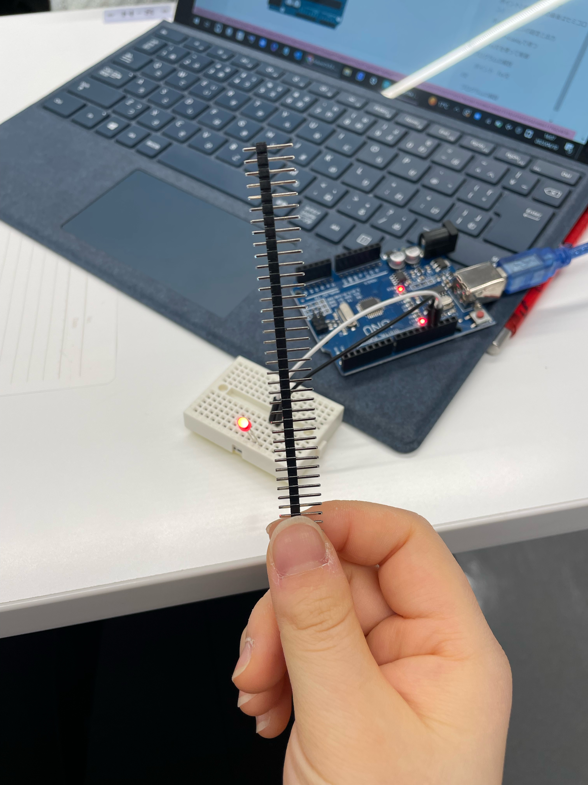
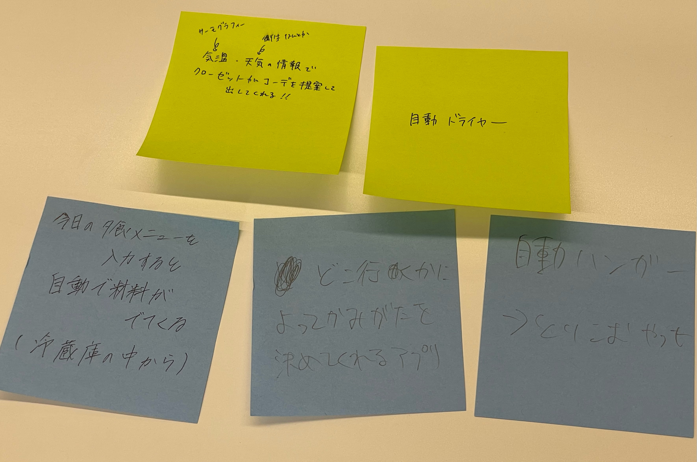
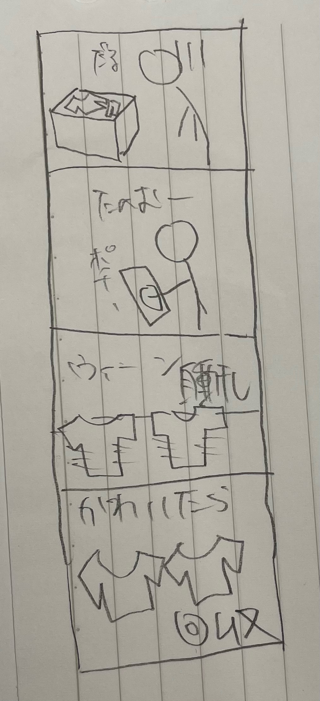

デザイン演習Ⅲ
IoTとは何か とりあえずチャットGPTにかわいいページを作ってもらった
loTとはデバイスを通信、共有しあって効率化する技術です。
データベース、ネットワーク接続、データ解析・処理、アプリケーションなどの要素が必要です。
けむし

IoTで何ができそうか？グループワークしたポストイット
三人でやりました

IoTで何ができそうか？自分で考えたアイディアスケッチ
自動洗濯干し機、取り込み機械
